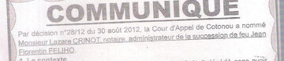
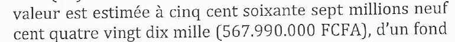
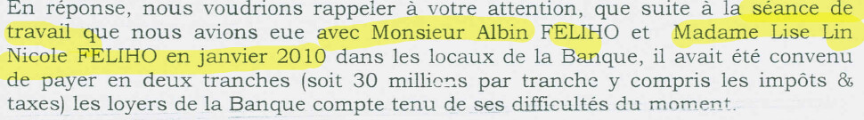
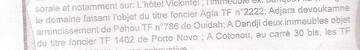

Certificat d'acquit de droit · 20 octobre 2016
Un décès daté de juin 2016… pour un homme mort en décembre 2010.

Un notaire « mandataire » d'un héritier qui ne l'a jamais mandaté.
Un patrimoine très minoré.
Les faits, pièces à l'appui
3 déc. 2010 — Décès de Jean Florentin FÉLIHO (déclaration de décès, CNHU-HKM)

2012 – 2013 — Me CRINOT nommé administrateur (arrêt 28/12), « seul habilité » (La Nation, communiqué du 3/4/2013)

Me BALLEY n'y figure pas.
Jugement n° 114/14 · Tribunal de Cotonou · 31 octobre 2014

Décès le 3 décembre 2010.

39 immeubles
567 990 000 FCFA
567 990 000 FCFA
Me BALLEY n'y figure pas non plus.
Le certificat contre les pièces officielles
LE CERTIFICAT
Décès : 10 juin 2016
LES PIÈCES OFFICIELLES
3 décembre 2010
Déclaration de décès (CNHU-HKM) et jugement du 31/10/2014
Le mandat
Me BALLEY, « mandataire » de Gilles FÉLIHO
Aucun mandat produit.

Lettre de Me BALLEY, 7 septembre 2023
Il écrit que M. FÉLIHO « n'est pas partie » à ses actes.
Les valeurs ne tiennent pas
LE CERTIFICAT
7 immeubles
138 300 000 FCFA
138 300 000 FCFA
LE JUGEMENT DE 2014
39 immeubles
567 990 000 FCFA
567 990 000 FCFA
Camp Guézo · banque AIB · Agla
Camp Guézo (TF 739, lot 240) : déclaré 65 000 000 FCFA

Banque AIB, « 240 Zone Résidentielle » : loyer de 2 × 30 M FCFA pour 2011
Lettre AIB du 5 octobre 2011

Agla (TF 2222) : absent du certificat
Cité dans le communiqué de La Nation, 3 avril 2013
Qui est Me BALLEY dans cette succession ?
Dépositaire du testament
Me Irène ADJAGBA ISCHOLA (jugement du 31/10/2014)
Pas Me BALLEY
Me Irène ADJAGBA ISCHOLA (jugement du 31/10/2014)
Pas Me BALLEY
Administrateur provisoire
Me Lazare CRINOT (arrêt n° 28/12, Cour d'appel, 30/08/2012)
Pas Me BALLEY
Me Lazare CRINOT (arrêt n° 28/12, Cour d'appel, 30/08/2012)
Pas Me BALLEY
Reprise du cabinet de Me CRINOT (décédé)
Un autre notaire
Pas Me BALLEY
Un autre notaire
Pas Me BALLEY
Liquidateur
Me BALLEY absent de l'ordonnance 842/2013 et du jugement de 2014
Pas Me BALLEY
Me BALLEY absent de l'ordonnance 842/2013 et du jugement de 2014
Pas Me BALLEY
Mandataire de Gilles FÉLIHO
Aucun mandat donné à Me BALLEY, aucun produit (lettre du 07/09/2023)
Pas Me BALLEY
Aucun mandat donné à Me BALLEY, aucun produit (lettre du 07/09/2023)
Pas Me BALLEY
Aucun lien juridique prouvé avec la succession.
Pourtant, Me BALLEY obtient de l'administration béninoise, « en qualité de mandataire », un certificat d'acquit de droit frauduleux.
Un dysfonctionnement très grave.
Toujours impuni.
La portée
Cette arnaque s'applique à d'autres Béninois, de l'intérieur et de la diaspora, et aux nouveaux venus : les afro-descendants, cibles privilégiées.
D'où l'importance d'une sensibilisation de tout un chacun et d'une réponse exemplaire, dont l'absence est ici dénoncée.
Sensibiliser.
Exiger des comptes.
Exiger des comptes.
wadagni2026-verite.com
Sources et pièces justificatives
#JusticePourFeliho · L'intégrité ne se divise pas
Éthique Juridique 2.0 Internationale